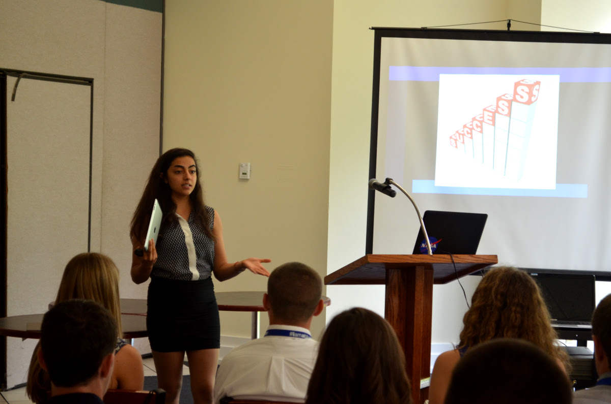
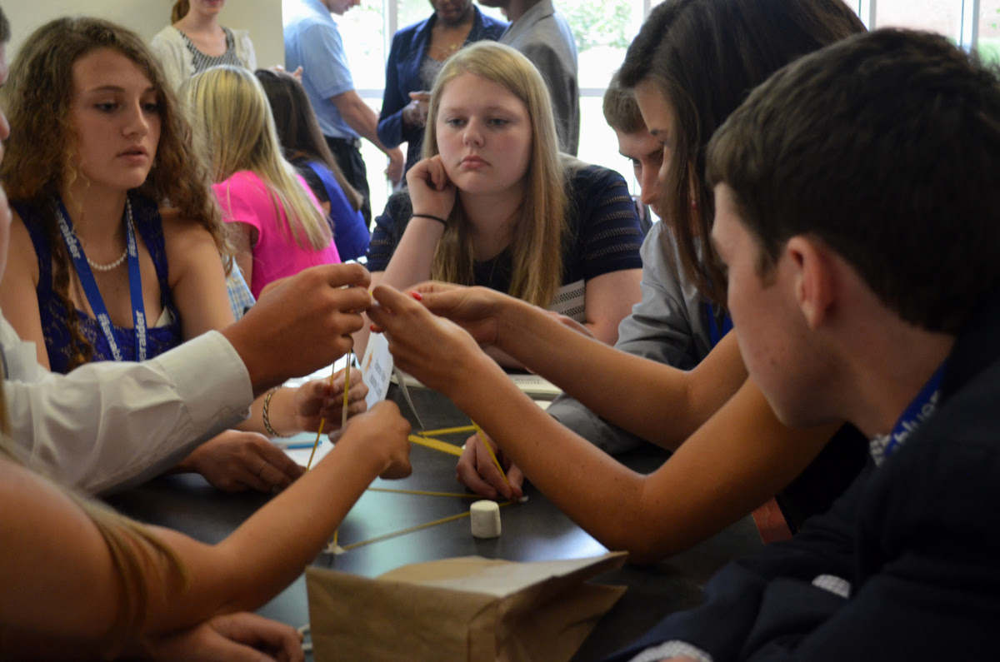
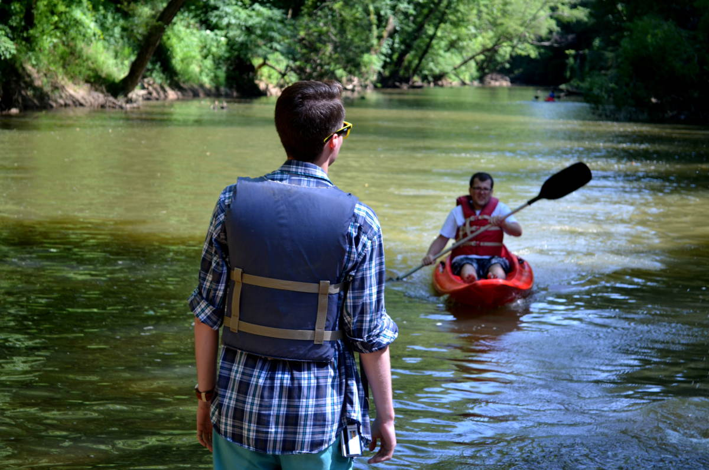
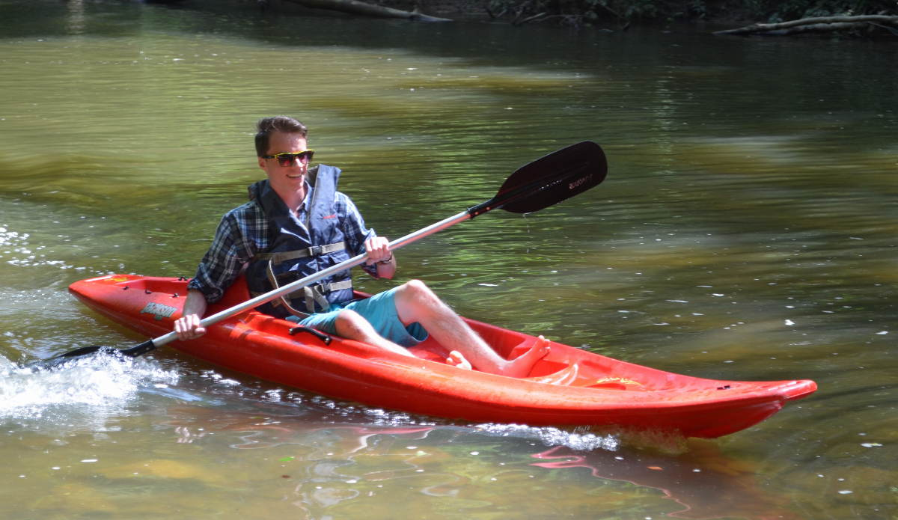

Day 1
Traditionally, the EPG cohort of each year has been invited to give a presentation to the Hal Rogers Scholars each year. The Hal Rogers Scholars are rising high school juniors who have shown high success potential and are from the rural parts of Kentucky. They are enrolled in an “EPG-esque” week long leadership and teamwork training and as part of their training the EPG cohort prepares a workshop and presentation to introduce the scholars to entrepreneurship by repurposing some of the same exercises that we ourselves have experienced this summer.
We were informed that we would be hosting this workshop tomorrow and without considerable aid from Dr. Hackbert: it would be up to us to introduce, lead and perform activities during the event. Thankfully we were not left to ourselves to prepare as Dr. Hackbert led us through an amazing method for organizing and rehearsing an event in just one day. I will be writing a post on this method and will link it here when complete. We spent the entire morning and afternoon sessions preparing the presentation and coming up with activities and we spent the night session rehearsing.
Day 2
 Lalu leading her portion of the workshop.All dressed up and ready to impress some high schoolers, we left the college at 6AM and headed to Columbia, KY. We unpacked materials and began to set up in the room we would be presenting in. The Rogers Scholars arrived earlier than expected but we were already set up and ready to begin.
 Teams of the Rogers Scholars working together on "The Marshmallow Challenge".We began by introducing ourselves individually and then after introduction by Lauren, I led the first activity then passes the mic on to the next team to continue the presentation. I have embedded the presentation below:
All went well and we left with the feeling that the kids really enjoyed the experience (as much as they could while wearing a tuxedo or heels, anyways).
Day 3
We left campus at 9:30PM to explore some key assets of Eastern Kentucky. Originally we planned to divide this work among the teams. If you recall, each team was assigned two counties to work with earlier in the summer. The teams wrote letters to key civic leaders of each county asking if they would like to benefit from our work. We have not heard from any of them so it was decided that we would attempt to absorb as much as we could from Eastern Kentucky as a group in the course of two days.
We started out by visiting the Lee County Tourism Center where we met Dedra Brandenburg one of the two only full time paid tourism directors in the area. We checked out the museum there to begin to understand a different economy dependency that was prevalent in the area; timber. After the museum we breaked for lunch with the tourism director who revealed to us that she was thinking of organizing a canoeing or kayaking race on one of the local rivers. The race would be open to the local colleges to compete and the hopes are that the event would bring attention to the area and help to bring more tourists to the area. She was curious what we as part of EPG thought of the event and was curious as to what needed to be done to execute the event.
 Getting ready for my turn in the relay race.To help us understand the value of a river race, we headed out to Red River Adventure Tourism outfitters to rent enough canoes and kayaks to stage our own race among the teams of the EPG Cohort. My team happened to have a great deal of experience with canoes so we were able to bring home the gold on the short ¼ mile canoe race. As for the kayak portion, we were given an enforced 3 minute starting disadvantage for finishing the canoe portion 1st. We are not totally sure how this was fair, but we ended up coming in last place for the kayak portion.
 Not sure why I look so happy in this picture. Guess I was glad to be almost done. My arms were killing me!From here we checked into the Buckhorn State Lodge. The lodge was way out in the middle of nowhere and offered limited WiFi that was a nightmare to connect to and no data reception so everyone went the whole night without checking emails or Facebook. The lodge had a great view and a small swimming pool that was enjoyed into the wee hours.
Day 4
We gathered in a private room in the lodge at 8:30Am to have a lecturette with Dr. Hackbert then we departed from the lodge to check out some more key assets in Eastern Kentucky. We started at Kelsey’s on Main, a diner run by a local serial entrepreneur who is currently working on making the 2nd floor of her resturant into appartment-style rooms to rent out to tenants.
After lunch we drove around to various attractions in Knott county including the Knott County Sportsplex and ended our day with ice cream at Spencer’s Dairy Bar. From here we returned to Berea.
Day 5
Today we were scheduled to present our findings from last week for our assigned portion of the Boone Trace Trail to Dr. John Fox. A member from each team took the responsibility of giving the presentation but the rest of us were on standby to answer impromptu questions from Dr. Fox and provide clarification. It seemed clear that Dr. Fox found our observations helpful and valuable as we represent the “average traveler” that would be traversing the trail; not the kinds of experts that he is used to hearing from as part of the Friends of the Boone Trace.
Later, Hackbert revealed the rubric and expectations of the final presentation that each member would prepare and present next week as a sort of final observations, recommendations and lessons learned from the entirety of the EPG experience. Much of the final is reflective in nature and I am glad to have all of these blog entries to look back on as I work on the presentation this weekend.
 Map that I made of all bike rack on campus.
Map that I made of all bike rack on campus.
On a side note, Berea’s trail town application is in good standing but Hackbert received feedback that we need a trail head sign and a count of all the bike racks in town. Hackbert spoke to my previous boss Tim Glotzbach to arrange that a temporary trail head sign be made from the student crafts department. Hackbert contacted me personally since he knew my affinity with biking and asked if I would be willing to map and document all the bike racks on the Berea College campus (the rest of Berea had already been accounted for). I accomplished this and created a map and list of captioned photos on Saturday.